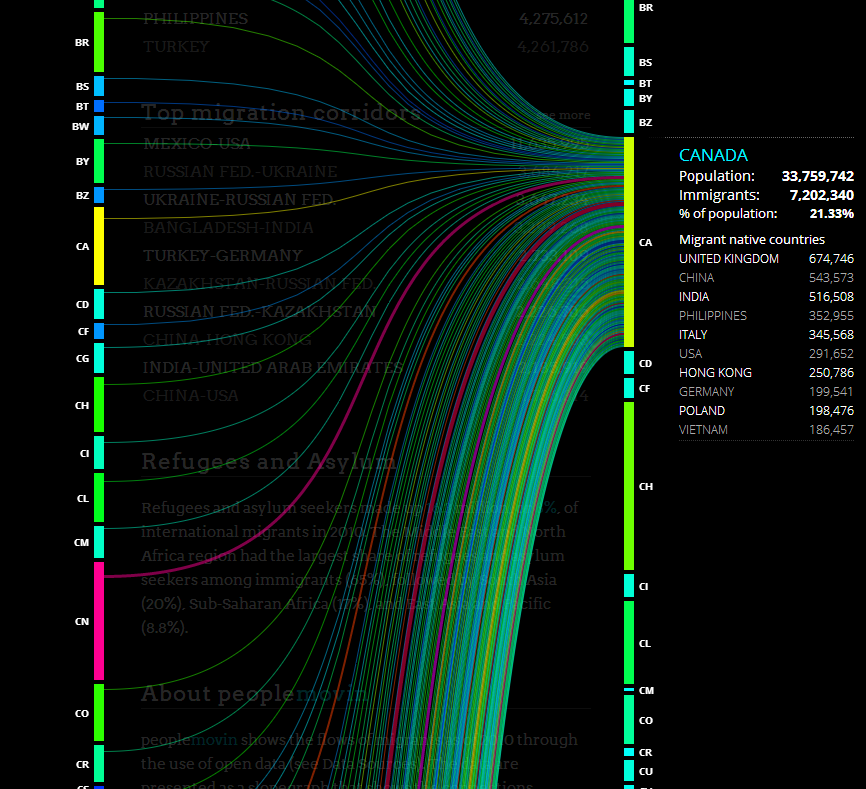
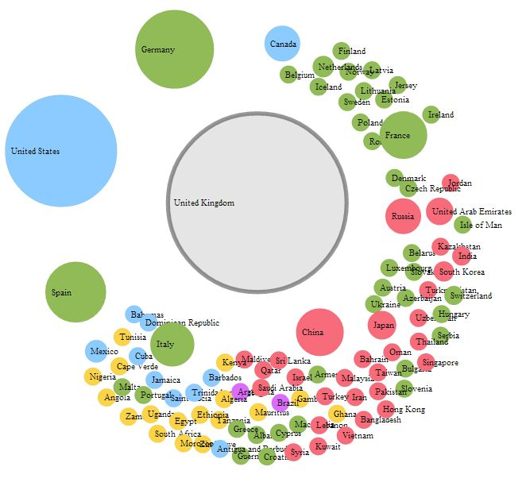
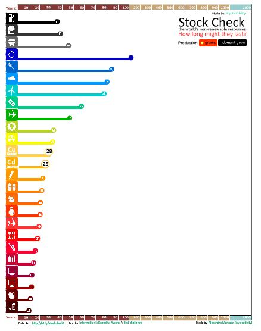
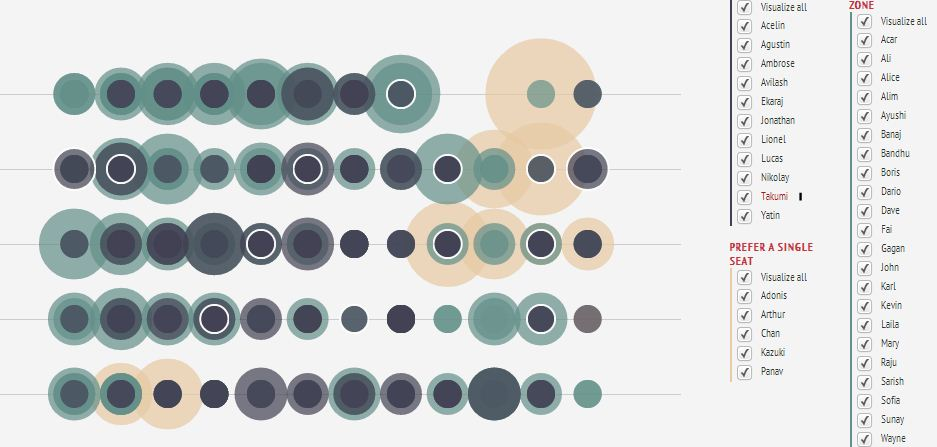
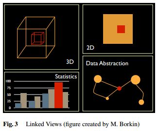
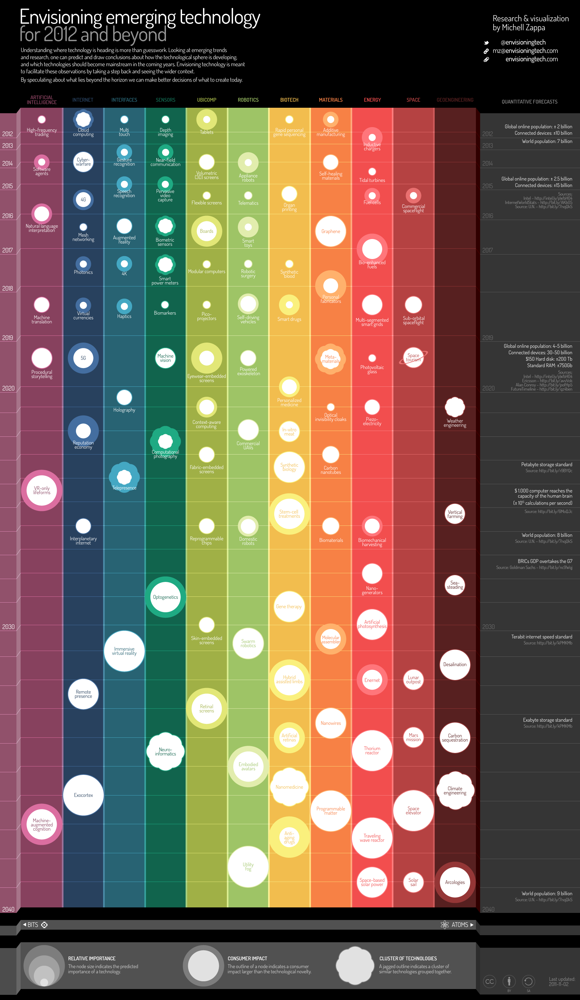

数据可视化
Data visualization 是一件很有趣的事情。最近在尝试处理数据，便顺手翻了翻 visualization 的进展，然后除了 IBM 大名鼎鼎的的 many-eyes ，还有一个比较好有意思的网站是 visualizing.org。 Visualizing.org 跟 many-eyes 很像，是一个社区形式的网站，用户可以注册然后上传，而且网站还有积累下来的很多数据供用户使用。
当然我不是为了介绍这个网站才写这篇 post 的，写 post 是一个记笔记的过程，如果我不能从中学到什么，就有点浪费时间了。下面进入正题，我尝试总结一下 visualization 的时候的几个可用的经验。
应该使用何种形式来表现数据
从 visualizing.org 的分类中提取出来的有用的形式包括（不过说实话这样分类并不是很好用）
- Chart
- Time series
- Map
- Flow
- Matrix
- Network
- Hierarchy
- Info-graphic
要可视化的数据可以分几类（我想的不全面，欢迎补充，共同学习）
- 有一系列对象，他们之间相互有关联。写成 \(\bf \mathrm A \leftrightarrow \mathrm B\) 粗体的拉丁字母表示一系列对象，比如一系列地点。
这种情况下因为要展示数据之间相互关系，所以实质上是一个 network 图，不过通过一些技巧可以把简单的 network 图变成更好的形式。
方式一：使用转换成 flow 图。通过把对象列出两遍来是的原本应该是一个比较复杂难以看清的 network 变成了清晰易查找的 flow。
这类图中我喜欢的一个是 people moving 的 flow

这个 flow 图非常好的展示了从一个国家移民到另一个国家，上面的截图就是人们移居（migrate，是移民么？）到加拿大的情况，可以看到中国（CH）移民到加拿大的还是比较多的。通过这样的 flow，我们可以很容易很直观的分析数据。
方式二：圈形的 network 图。为什么要做出圈形呢？因为圈形可以使得连线集中在圈内部，而且可以减少数据交叉。通过 interactive design，可以使得连线无交叉。比如这个 Migrants moving money：
这个截图是中国的侨款，也就是中国移民所寄回祖国中国的钱数。可以看排除香港地区，美国是最大的来源。
事实上这种方法与第一种本质是相同的。
方式三：network 图。通过点和连线来关联。例子比如Attractions of Councils: WEF GAC interlink survey
但是这个图实际上并不好。而且有时候，线条是可以去掉的，比如这个国际航班的可视化：
Click a nation to see all connected nations via flights. Click again to see arranged nations based on the distance.
Double-click the background to reset.
截图：

方式四：使用 table。不过为了更直观，使用面积等方式来代表数据的大小。
比如 10 个人任意两个人之间相互按照对对方的好感程度打分，为了展示任意两个人 A 和 B 之间相互的好感程度，可以使用颜色柱来展示，选定一个作为两个人好感程度相同，颜色柱之上的颜色表示 A 对 B 的好感大于 B 对 A 的好感，反之亦然。
这里有个 council 之间的例子，截图如下：
- 层级数据，数据之间可以分成几个层级关系。
就是 Hierarchy 图，不过有时候可以省掉连线。
从这张截图立刻可以看到 coca-cola 和 pepsi 的庞大，通过原网页可以自由的放大缩小来查看不同的公司的产品。
这样的 hierarchy 图要比单调的并列的整整齐齐的列举要包含了更多的信息，因为圆圈的大小可以表示数据的一个维度，甚至还可以引入颜色等等来表示更多的维度。
- 简单的两维数据，比如某种现象出现的频数。
方式一：使用 Histogram。这是比较经典的选择，即使用矩形或者线条的长度来表示数据的大小。例如这个关于能源的 visualization，截图如下：

方式二：使用树图（Tree map），使用面积表示数据的大小。这里有个 UN 的 Global Pulse Visualization 的例子：
方式三：使用散点，使用散点的大小或者颜色等属性来表示数据的大小。
一个很优秀的例子是学生坐座位习惯的例子，截图：

事实上 tag page 也是属于这类，我们可以通过每个 tag 的大小颜色等等来标示数据的大小。
- 坐标数据
除了可以使用上面说提到的方式，对于坐标数据，有个特点是可以绘制地图（Map），而 Map 可以与其他形式结合，比如 flow。一个比较好的例子是关于我们坐飞机的一张图，截图如下：
图片上部的地图是飞行的出发城市，下部的地图是终点城市。更多内容可以查看UCSB的这个站点，其中提供了 demo 软件。
不同 visualization 的结合
前些时候，一位天文学家 Goodman 写过一篇关于高维天文数据可视化的论文，其中提到了 linked views 很重要，就是说我们要多种可视化方式联合起来展示数据，我截取论文中一张图片来说明。

不同的 visualization 结合起来对数据进行多角度的呈现，可以使我们对数据有更深刻的理解。所以 data mining 实际上是一个应用非常广泛的专业，一个 data mining 专业的学生在现在这种天文专业被大量数据所轰炸（有篇论文甚至说是 data tsunami）的时代真是个宝贝啊。
有一个不错的历史方面的数据可视化例子，把时间线和地图集合起来展示的，这个方案实际是一种深层次的 linked views：
Conflict History of the World
一些有用的工具
- http://en.wikipedia.org/wiki/Data_visualization
自然要先查看一下 wikipedia 啦啦啦~ - visualizing.org 有个列表：
- http://selection.datavisualization.ch/ 列举了很多有用的工具。
- https://github.com/blprnt/Kepler-Visualization This is a Processing sketch to visualize data from NASA’s Kepler mission.
- http://flowingmedia.com/timeflow.html Time Flow is an open-source timeline built to help journalists analyze temporal data. The application offers several view modes–timelime, calendar, list, table–to help explore thousands of data points.
- http://mapbox.com/
Mapbox is a tool for map making.
Data Visualization 的机构/组织/社区
有些不错的 data visualization，比如（图片来自 envisioningtech.com）

- IBM 的 Many-eyes.com
这个一开始提到了，是个 visualization 的社区。
之前提到过它的工具列表了。这个网站是
Datavisualization.ch is the premier news and knowledge resource for data visualization and infographics.
一个类似 data visualization 社区的网站。
来自 GE 的例子。
Web-based Analysis and Visualization Environment
本文所用的数据按照 visualizing.org 所标示，使用 CC BY-NC-SA 协议，除了明确指明的图片，其他图片皆出自 visualizing.org。
好了讲完了，可以用 exoplanets.org 的数据来玩玩。

{kind=link}
{kind=link}
{kind=link}
{kind=link}
{kind=link}
{kind=link}
{kind=link}
{kind=link}
{kind=link}
{kind=link}
数据可视化
谢谢～
不错
谢谢～
图片非常好看
谢谢～
楼主有这个主题的wp版本么，能否借用啊
这个原始版本是 lukoo（http://wordpress.org/extend/themes/lukoo），但是被我改的乱七八糟了。
线条挺美的
：）
精确量化的数据思维和抽象简约的图形思维曲径通幽
好华丽的excel (☆_☆)
向博主问好
我发现你们微博内容好全面~
哇塞，你们网站很棒~
博主看起来是个文艺科学家哦，博客的风格挺清新，喜欢
：）
推荐
mark
有用的东西
数据可视化